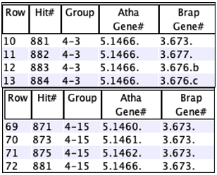
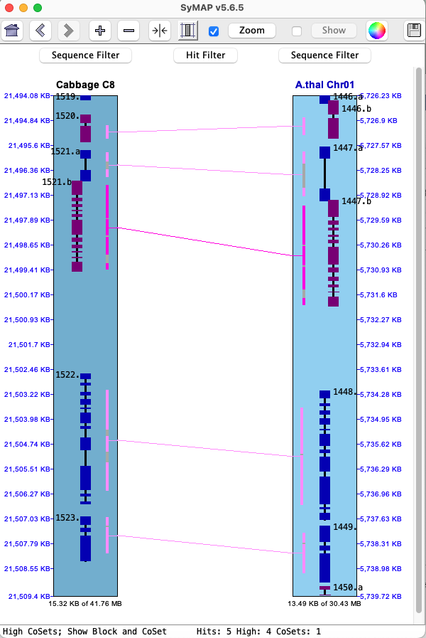
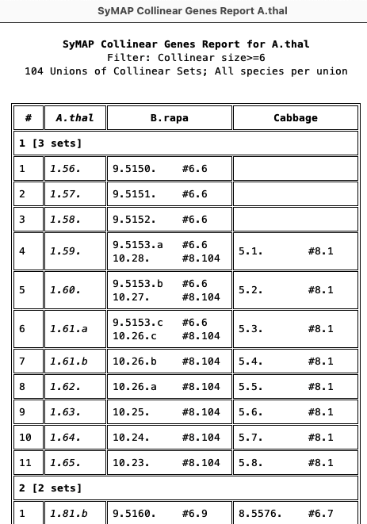

|
| SyMAP Queries |

| |
| |||
See Release for the latest v5.6.1-v5.6.5 changes. See Terminology in the User Guide.
> Instructions
To open the query interface, first select two or more sequence projects in the Project Manager. Then select the|
The The Open the | 
|
> Query Setup | Go to top |
1. Rules
|
Set up the desired filters and then select 1. Most filters can be used in conjunction with other filters; options will be disabled if they cannot be used with a selected filter. 2. The 3. All | 
|
| All | 
|
| Gene# | Go to top |
All genes have a
|

|
|
| Go to top |
|
Not numbered: The Numbered: These are numbered sequentially, where the counts start after the annotated gene numbers. For example, if the last Gene# for Chr03 is 5550 (e.g. 3.5550.), the first pseudo gene number will be 6000 and the column will show 3.6000.~. | 
|
Wait/Stop Query:
→ Wait for the current query to stop running before starting another!
It is not possible to start a new query from the same panel, but you could start one from a different table;
they both will fail, so do NOT do this!
|
→ When a query is running, you will see a status line and the It cannot stop the database search, but once the search is done, it stops all subsequent processing. You will typically see the status line change 3 or 4 times before showing the table. |
|
2. General | Go to top |
Enter a substring: the entire annotation string (i.e. column |

|
| Select a specific chromosome for the species. | ||
| The | ||
| The |
It is valid to enter only the
The
3. Single genes | Go to top |
| The |
Orphan genes (no hits)
Genes that do not a have a hit and meet the additional filters. The orphan genes are relative to the projects shown on theInstruction page. For example, if species X, Y and Z have synteny computed between all pairs, but only X and Y are selected, the orphan genes for X would be those with no hits to Y. If X,Y&Z are selected, the orphan genes for X would be those with no hits to Y and Z.
All genes (w/o hits) , i.e. genes with and without hits
This shows all genes that meet the additional filters, regardless if they have a hit or not. There is always the same set of genes for a project, regardless of synteny.
| Unselect species: When the |

|
4. Pair hits | Go to top |
|
Each hit connects two species (projects) and hence represents a pair of aligned
regions for two of the selected species.
Filters are as follows: |

|
| Yes | Only hits that are part of a synteny
block will be returned. All hits will have a value for the | ||
| No | Only hits that are NOT part of a synteny
block will be returned. No hits will have a value for the |
| Every | Only hits that align to a gene on one or both sides of the hit will be shown.
The | |
| Every* | This is like the | |
| One | Only hits that align to a gene on ONE end will be shown.
The | |
| Both | Only hits that align to genes on BOTH ends will be shown.
The | |
| None | Only hits that do NOT align to a gene on either end will be shown.
The | |
| If a species chromosome is selected with | ||
| >= [=, >=] N | List all hits in collinear sets that have size >= N or = N or <= N, respectively. | |
| Ignore | Do not filter on collinear set sizes. | |
| See Collinear, which explains the SyMAP collinear sets. | ||
| Go to top |
For the following 4 filters, do not include the 'Chr' number. Instead use the chromosome pull-downs
to narrow the search to a specific chromosome, as exampled in
Enter a single block number (the
This will display all hits with this block number from any chromosome pair.
Example using the chromosome pull-downs: if you select Chr 1 from the first project, Chr 2 from a second project, and enter block=3, you will see
hits in block 1.2.3.
Enter a set number (the
This will display all hits with this set number from any chromosome pair. See Block example.
Enter a hit number. Both major and minor gene hits will be shown.
This will display all hits with this number from any chromosome pair. See Block example.
Enter a
A gene will only show if it has a hit. All hits with the
If a gene has a suffix:
• If only a number is entered, all genes with the numeric prefix will be displayed (including minor hits).
• If a number.suffix is entered, the exact gene will be displayed, including minor hits.
Select a chromosome:
• The hit has to have one end to the chromosome, but the
• By unselecting the other species (see Unselect species), the
Group:
• When a gene hits multiple places on the same opposite chromosome, the hits are put in a group
(see
4. Compute Groups | Go to top |
These two options are computed on the fly.
They produce query results with values for the
4.1. Multi-hit genes

List all genes that have >= N hits to the same species. To view the groups merged, see Multi-hit gene report.
- The target gene refers to the gene with >= N hits to the opposite species.
- The target must be a gene, but it can be to non-gene hits on the opposite species.
- Used with the following filters:
Both (Annotated Genes ): if selected, the opposite species must also have a gene hit.Chr : If one or more chromsomes are selected, the target genes will only be on those chromosomes.
- See Multi-hit Gene Report... for a good way to see a condensed view of the results.
The options are as follows:
| Include minor hits on either chromosome. | |||
|
| (Annotated species only): The >=N hits must be to a tandem array of genes.
| ||
|
| The >=N hits must all be on the same opposite chromosome. | ||
|
| The >=N hits may be on any set of opposite chromosomes for a given species. |
| Go to top |
|
The table can list the same hit multiple times, because gene X and gene Y may be connected by a hit, and both genes
have >=N hits, so the hit in both groups need to be shown.
An example is shown on the right, where Hit#881 is in both Atha Group#3 and Brap Group#15.
The image below shows the two groups, where the group hits are highlighted in magenta; these were
produced using the |  |

4.2.
| Go to top |
- This algorithm finds clusters overlapping genes. This is, every gene in the cluster aligns to at least one other gene in the cluster, and all genes that align to any gene in the cluster are included. For example, for a cluster of genes {A,B,C,D} each has a hit with at least one gene in the cluster and no hits to a gene not in the cluster.
- Each cluster is given a group number, which is shown in the Query Results table (column name
Group ). - These can be pre-filtered by species chromosome, etc.
- If the un-annotated are not numbered (see Pseudo) only hits with both genes will be included.
- If the un-annotated are numbered, the pseudo genes will be included, that is, the default is to consider every
hit with at least one gene. In this case, the
One Gene andBoth genes filters can be used in conjunction withCluster .
| If there are only two species, the only filter will be For more than 2 species, the filters are shown on the right. |

|
| List all clusters that have >= N hits. | |
| The resulting clusters may have at least one gene from all included species. | |
| The resulting clusters will contain no genes from the excluded species. |
Alternative algorithm:
|
If you start |
Result Panel | Go to top |
1. Results Table
A pair hits table
Pair Hits :- The table contains columns for all of the selected species, but each hit only connects two species, and the other species columns are empty.
- Each
Hit# is only listed once unless minor genes are included (see Rules). - A gene may be listed more than once if it has multiple major hits.
Single genes :- If the query specified
Single genes, then each row represents one gene and shows data only for one species.
- If the query specified
You can sort the columns by clicking the column name in the table, and rearrange them by dragging the
column name. You can add/remove columns using the
2. Columns | Go to top |

| The buttons on the bottom will be | 
|
| Clears the selection of all columns except | |
| Selects the default columns, which are shown in the image above. If the collinear query was run, this will include the Collinear. If the group query was run, this will include the Group. | |
| Arranges similar columns, putting the gene columns first. |
In the column panel shown above, hover over a column name to see its brief description. Following are the full descriptions of the columns.
2.1 Pair hits columns | Go to top |
| Row number. This column does not sort. | ||
| The synteny block containing this hit (if any). The format is Chr.Chr.Block#, where the two "Chr" are chromosome numbers. | ||
| The number of hits which comprise the synteny block. | ||
| The collinear set containing this hit (if any). The format is Chr.Chr.Size.Set# (e.g. 1.2.5.100; there are 5 adjacent gene hits in set# 100 on Chr1 to Chr2). | ||
| The number assigned to the hit. They are sequential along the chromosome of the alphabetically lesser species, e.g. Arab<Brap. | ||
| Percent identity of the alignment. The value of the "Identity" column is from the MUMmer file. If the hit has subhits, then this is an approximation. | ||
| Percent similarity of the alignment (as determined by the BLOSUM scoring matrix). The value of the "Similarity" column is from the MUMmer file. If the hit has subhits, then this is an approximation. | ||
| The number of subhits in a clustered hit. | ||
| The strand for the two ends of the end separated by a "/". | ||
| The summed subhits within a clustered hit taking into accounts overlaps. The summed subhits are usually different for the two sides; this will be the longest. | ||
| There are two alternative algorithms for clustering the hits on database creation, which assign
different hit types, as follows:
e.g 'EI' would indicate the hit covers A.thal exon and Cabbage intron. | ||
|
| ||
| Chromosome of the hit. | ||
| Start and end of the annotated gene. The | ||
| The gene number is C.#.{a-z}. The C is the chromosome number. The # is the sequential number along the chromosome. If a run of genes overlap, they receive the same gene number with different suffixes {a-z, a2-z2, etc}. | ||
| Start and end of the hit region. | ||
| Hend-Hstart+1 | ||
| The value depends on which | ||
| The keywords for the annotations of each species are listed;
they can be different for each species.
See GFF Attributes
for modifying the keywords shown. The | ||
2.2. Single genes columns | Go to top |
| This is the number of hits to the gene in the ENTIRE databases, except for SELF synteny. |
→ if Arab, Brap and Cabb species have all been compared for synteny,
→ and only Arab-Brap or Arab-Cabb are being queried, they will have some rows with
→ and the Arab-Brap-Cabb query will have all
This is illustrated below, where gene# 1.2 is the first table because it does NOT have a hit to Cabb, but it has
| Arab-Cabb orphans
| Arab-Brap orphans

| Arab-Brap-Cabb orphans

|
2.3 Columns and order shown | Go to top |
The selected columns are saved between sessions (described below), but the order is not.
2.4 Auto-save columns
The columns selection is saved in a file called .symap_saved_props in the user's home directory so that the next time youIf you have multiple SyMAP databases, when you change between them the columns displayed are relative to the last SyMAP database queried (they may seem some what random to a different SyMAP database).
3. Statistics | Go to top |

Most of the statistics are self-explanatory except the following:
For
A.thal Groups: #50 (50) #142 (192) B.rapa Groups: #618 (810) #984 (1794) Cabbage Groups: #847 (2641) #495 (3136) | There are 3,136 total groups.
A.thal has 50 with B.rapa and 142 with Cabbage, where the first set is 1-50, the second is 51-192, etc. |
4. Top buttons | Go to top |

The
4.1 Show | Go to top |
4.2 MSA... | Go to top |

Select one or more rows from the query table. The sequences of the selected hit(s) are written out and a multiple alignment is created using either MAFFT (Katoh 2013 MBA:30) or MUSCLE (Edgar 2004 NAR:32). MAFFT can be run with multiple CPUs and the optional --auto option, where --auto takes longer but allows MAFFT to determine the best algorithm to use.
|
| While aligning, the line at the top of the panel will state the number
of bases aligned as shown on the right.
The |
General Notes:
→ Wait for the current MSA to stop running before starting another!
It is not possible to start a new MSA from the same table, but you could start one from a different table;
they both will fail, so do NOT do this!
→
- Their processes will be called muscle for MUSCLE and distbfast for MAFFT; MAFFT may have some other process running, but distbfast this seems to be the one that takes the most time/memory.
- To stop: you can type
top at the command line, copy the 'process number' beside distbfast or muscle, then at the terminal, type kill -p 'process number'. - Make sure distbfast or muscle are stopped, as they take a lot of memory!
However, if you do not see it, then it has completed.
MAFFT Notes:
→ All executables were removed that did not seem necessary. However, I may have removed
one(s) that are used in certain unusual situations when --auto is used. Try again with --auto unchecked.
→ On Mac, if you are using MAFFT --auto, you may get a "Cannot be verified" for dndpre.
See MacOS and external programs to fix this.
4.3 View 2D | Go to top |
This displays the
| Option | Column* | Selected Hit | Display Filter |
| N/A | The hit is padded to each side by the amount indicated in the kb text box. | ||
| The entire collinear set of hits for the selected hit will be shown. | |||
| The entire synteny block for the selected hit will be shown. | |||
| The entire group of hits from the two chromosomes of the selected hit will be shown. |
| If selected, the selected hit is highlighted in the Popup-query color (default magenta).
The coloring can also be turned off by selecting the | |
| If selected, the |
| Example: | Go to top |
|
The image on the right shows a Collinear set of 5.
After the initial display, the
The table below shows results when the
|  |

{kind=link}
{kind=link}
{kind=link}
{kind=link}
{kind=link}
{kind=link}
{kind=link}
{kind=link}
{kind=link}
{kind=link}
4.4 Export... | Go to top |
|
The |

|
4.5 Gene Report... | Go to top |
- The report is on the genes in the query table; hits without paired genes are ignored.
- Unless the query is for
Collinear ,Multi-hit orCluster genes , aGene report will be produced. - This is most relevant when used with >2 species. It has not been tested for >4 species.
Gene ,Collinear andMulti-hit genes produce a reference-based report whereas theCluster genes does not; howeverCluster genes shares most of the same options.
Reference-based Interface
The menu on the lower-right shows the options that will always exist. There may be additional options in between the middle lines, depending on the condition used to create the table, as discussed below.
|
|
{kind=link}
| Determines the length of the annotation before wrapping around; relevant to long descriptions. | |
| Truncate long description using the width specified. | |
| Show the | |
| Draw a border around each cell of the table. Otherwise, there will only be a line before each group of genes. | |
| Displays a panel of the results, which will look just like viewing the HTML file. | |
| Writes a file that can be viewed as a web page. It is written in a human readable form such that anyone with HTML knowledge can edit it. | |
| Writes a tab-separated-values file that can be viewed with Excel or any editor. | |
Additional options for >2 species: The following options will be shown between the middle lines if there are >2 species. The options are explained with the respective report.
Link: This term is used to indicate that there is a hit between two species, typically non-reference species.
{kind=link}
For all reports:
- The reference column is in italics. In the TSV file, the reference header has an '*'.
- The SyMAP
Gene# is used in the report, which provides the chromosome number and order of genes. - The annotations correspond to the genes listed for the species. A "---" indicates that there is a gene with no corresponding annotation. If there is more than one gene in a column, the corresponding annotations will be separated by a ";".
Gene Report | Go to top |
|
| Only show rows with all species. | |
| Only show rows with all species and at least one link. | ||
| Only show rows with links between all species (this often produces no results). | ||
| Show the links. Since | ||
The report lists all genes from the reference species and what genes each aligns to. The image below shows the top of two different
Rows are always merged that share the same reference. The top line shows there are 15 single rows (one gene for each species) and 0 multi rows (multiple non-reference genes for at least one species). There are 2 multi rows in Mus11, where one is shown in the 3rd row.
A "=" indicates that the gene is linked to the gene next to it (ignoring the Reference column); a "+" indicates it is linked to the gene over one column (only happens when there are 4 species).
{kind=link}
Collinear Report | Go to top |
| All species | The reference gene must be in a collinear set with every species. | |
| Displays the collinear set beside each gene. | ||
|
The report on the right shows the first union of the A.thal collinear sets. This was generated with The '1 [3 sets]' indicates it is the first union with 3 collinear sets. For the non-reference gene columns, by default, the collinear set size and number (size.setN) is shown. For example, row 4:
The other genes in each collinear set are obvious since they share the same size.setN, e.g. #8.1 is shown in 8 rows. |  |
{kind=link}
Multi-hit gene report | Go to top |
| Only show rows with all species. | ||
| Show all rows. | ||
| Show the group (size-number) above the respective. | ||
The
{kind=link}
4.5.5 Cluster hit report | Go to top |
The cluster report has no reference, as shown on the right (i.e. no radio buttons for selection).
| |||||||||||||
{kind=link}
{kind=link}
4.6 Search... | Go to top |
| The The columns in the popup
will vary depending on the columns displayed in the table. This will only show
the columns that are searchable. Besides the top 4 shown,
the species
|
{kind=link}
> Results | Go to top |
{kind=link}
All query results are listed under the
The only way to remove query results from the left tab is by selecting them in this table followed
by
3-chromosomes | Go to top |
→As shown here, it is possible to bring up the 2D display with 3 chromosomes from the query table (released v5.6.2).
Select two rows with the following requirements:
(1) Both genes must exist in each row.
(2) There must be a shared gene.

The two chromosomes with the unique genes may be from the same species or different species.
Select
2D Highlight Conserved Genes shows how to highlight shared or unique genes in the 2D display of 3 chromosomes. | 
|
{kind=link}
| Go to top |